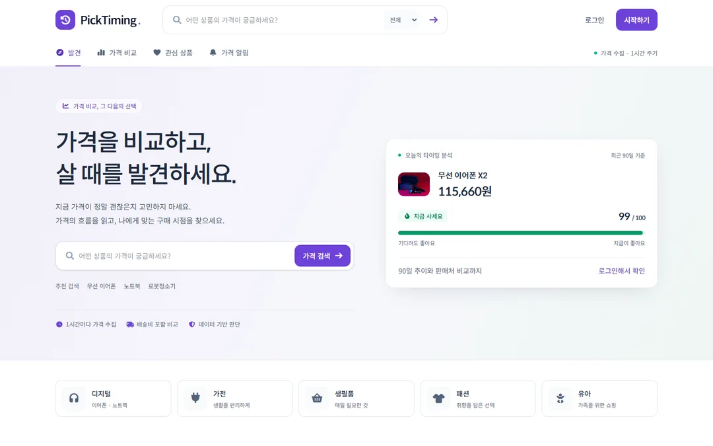
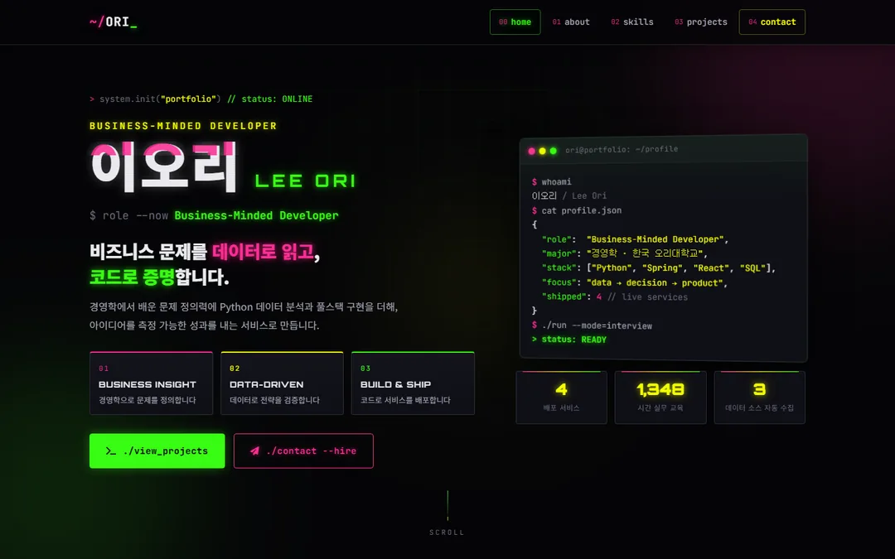

Define
비즈니스 문제 정의
경영전략·마케팅조사 과정에서 익힌 프레임으로 고객의 불편과 KPI를 먼저 정의하고 개발 범위를 결정합니다.
> system.init("portfolio") // status: ONLINE
Business-Minded Developer
비즈니스 문제를 데이터로 읽고,
코드로 증명합니다.
경영학에서 배운 문제 정의력에 Python 데이터 분석과 풀스택 구현을 더해, 아이디어를 측정 가능한 성과를 내는 서비스로 만듭니다.
$ whoami
이오리 / Lee Ori
$ cat profile.json
{
"role": "Business-Minded Developer",
"major": "경영학 · 한국 오리대학교",
"stack": ["Python", "Spring", "React", "SQL"],
"focus": "data → decision → product",
"shipped": 4 // live services
}
$ ./run --mode=interview
> status: READY ■경영학 전공자의 시선으로 '왜 만들어야 하는지'를 먼저 묻고, 데이터와 코드로 답합니다.
Define
경영전략·마케팅조사 과정에서 익힌 프레임으로 고객의 불편과 KPI를 먼저 정의하고 개발 범위를 결정합니다.
Analyze
Python으로 수집·정제·시각화한 데이터를 근거로 추천 로직과 가격 전략을 설계하고 결과를 수치로 검증합니다.
Deliver
화면·API·DB·클라우드 배포까지 하나의 흐름으로 구현하고, 사용자가 바로 쓸 수 있는 서비스로 완성합니다.
/* 경영학 × 개발 */
한국 오리대학교 경영학과를 졸업하며 경영전략, 경영통계, 마케팅조사론, 경영정보시스템(MIS)을 중심으로 '문제를 숫자로 정의하고 의사결정하는 방법'을 배웠습니다. 졸업 후에는 생성형AI와 챗GPT를 활용한 빅데이터 분석 & 자동화 시스템 구축 과정(1,000시간)과 심화_생성형 AI와 AWS 클라우드를 활용한 풀스택 & 자동화 실무 개발 과정(348시간)을 수료하며 분석 결과를 실제 서비스로 구현하는 역량을 더했습니다.
저는 기능을 '만드는 것'보다 그 기능이 어떤 비즈니스 지표를 움직이는지에 집중합니다. 여행 특가 비교 시간을 95% 줄인 추천 서비스, 실구매가 기준으로 구매 타이밍을 점수화한 가격 분석 서비스처럼 사용자의 결정을 돕는 데이터 제품을 기획부터 배포까지 직접 만들어 왔습니다.
Codex·Claude·Gemini를 개발 파트너로 활용해 구현 속도를 높이되, 결과는 반드시 직접 검증합니다. 빠르게 만들고, 숫자로 확인하고, 다음 개선으로 연결하는 사이클이 제 일하는 방식입니다.
$ cat education.log
심화_생성형 AI와 AWS 클라우드를 활용한 풀스택 & 자동화 실무 개발 과정 · 348시간
생성형AI와 챗GPT를 활용한 빅데이터 분석 & 자동화 시스템 구축 과정 · 1,000시간
경영학과 학사 졸업 · GPA 3.87/4.5
비즈니스 → 데이터 → 서비스로 이어지는 전 과정을 다룹니다.
KPI를 정의하고 SQL·통계로 가설을 검증합니다. 분석 결과는 의사결정자가 이해할 수 있는 리포트로 전달합니다.
수집·정제·시각화를 자동화하고, 머신러닝과 생성형 AI를 추천·예측 기능에 적용합니다.
HTML·CSS로 반응형 구조를 만들고, JavaScript·React로 데이터가 살아있는 화면을 구현합니다.
Java·Spring Boot와 Python·FastAPI로 서버 로직과 API를 설계하고, 인증·검증 같은 기본기를 지킵니다.
관계형 스키마와 SQL을 설계하고, 중복 없는 이력 데이터를 MySQL 호환 클라우드 DB에 적재합니다.
Docker와 GitHub Actions로 빌드를 검증하고, AWS·Render·Netlify에 배포합니다. 생성형 AI는 개발 파트너로 활용합니다.
모든 프로젝트는 비즈니스 과제에서 출발해, 데이터 기반 전략을 거쳐, 측정 가능한 성과로 끝납니다.
 DATA · RPA · 추천
DATA · RPA · 추천
3개 여행사 특가를 자동 수집해 취향 기반으로 추천하는 여행 데이터 서비스
여행 특가는 여러 여행사에 흩어져 있고 가격·일정이 수시로 바뀌어, 사용자는 비교에 긴 시간을 쓰면서도 '지금 사도 되는지' 판단할 근거가 없었습니다.
Playwright RPA로 3개 여행사 특가를 정기 수집 → pandas 정제 후 TiDB 표준 스키마 적재 → 지역·예산·출발월 필터와 코사인 유사도 기반 Top 10 추천, 가격 추이 차트·관심 상품 알림으로 '구매 근거'를 제공했습니다.

PRICING · AI · 분석실구매가와 가격 흐름을 분석해 '언제 살지'를 점수로 알려주는 구매 의사결정 서비스
같은 상품도 판매처·배송비에 따라 실구매가가 달라지고 가격 변동이 잦아, 소비자는 '어디서, 언제 사야 유리한지' 합리적으로 판단하기 어려웠습니다.
배송비를 포함한 실구매가 기준 비교 모델을 설계하고, 7·30·90일 가격 이력을 중복 없이 적재해 통계 기반 구매 타이밍 점수를 산출했습니다. Gemini로 점수 해석 상담을 제공하되 숫자 검증·대체 설명 로직으로 신뢰도를 지켰습니다.
 PLATFORM · SPRING · CI
PLATFORM · SPRING · CI
조건 기반 부동산 추천을 목표로 회원·Q&A·보안 기반을 먼저 구축한 플랫폼 프로젝트
부동산 추천은 개인정보와 신뢰가 핵심입니다. 추천 기능보다 먼저, 안전한 회원 관리와 문의 흐름이 갖춰진 '확장 가능한 서비스 기반'이 필요했습니다.
Spring Boot로 Controller·Service·Repository 계층을 분리하고 BCrypt 비밀번호 저장·세션 인증·입력 검증·중복 ID 방지를 적용했습니다. JDBC 기반 Q&A를 TiDB/MySQL에 저장하고, Docker + GitHub Actions로 빌드를 자동 검증해 배포 신뢰성을 확보했습니다.

BRANDING · UX · SEO채용 담당자의 30초를 설계한 사이버펑크 테마 포트폴리오 (지금 보고 계신 사이트)
채용 담당자는 포트폴리오를 수십 초 안에 훑습니다. 핵심 역량과 성과가 즉시 읽히고, 연락까지의 마찰이 최소화되어야 면접 제안으로 이어집니다.
Hero에 3개 역량 키워드와 지표를 배치하고, 모든 프로젝트를 Challenge → Strategy → Result 구조로 재작성했습니다. 터미널 스타일 컨택트로 이메일·전화·메시지 전송을 한 화면에서 처리하고 SEO·OG·접근성을 적용했습니다.
터미널에 send를 입력하면 바로 면접 제안을 보낼 수 있습니다. 명령어가 낯설다면 아래 버튼을 눌러도 됩니다.
비즈니스 임팩트를 만드는 데이터·풀스택 포지션이라면 어디든 환영합니다.
면접 제안, 프로젝트 협업, 커피챗 모두 좋습니다.
↑/↓ 명령 기록 · Tab 자동완성 · 대화형 입력 중 cancel로 취소